-
IBPayments
08:42:36 AM / 04:48:789 Fail
IBPayments
02.13.2025 08:42:36 02.13.2025 10:17:25 04:48:789 · #test-id=2PassPerform Internal Transfer IB NowPassPerform Internal Transfer IB NowWhen close all the other opened windows before loading the urlWhen User opens the IB URL Given I login with username "298010" and password "Temenos@123" of IB
Given I login with username "298010" and password "Temenos@123" of IB And click on Go to AccountsAnd click on Transfers and Pay buttonThen click on transfer buttonThen Enter the transaction detailsThen confirm the internal transfer paymentAnd Review the internal transferThen logout from IbAnd Login to authorizer account with username "
And click on Go to AccountsAnd click on Transfers and Pay buttonThen click on transfer buttonThen Enter the transaction detailsThen confirm the internal transfer paymentAnd Review the internal transferThen logout from IbAnd Login to authorizer account with username ""and password " " And click on Go to AccountsAnd click on Transfers and Pay buttonThen click on Authorization buttonAnd Authorize the internal transferThen Review authorization that the details are reflected correctlyThen logout from IbWhen User opens the T24 Url Then User should be able to login to T24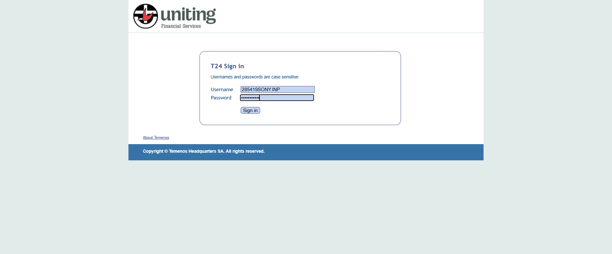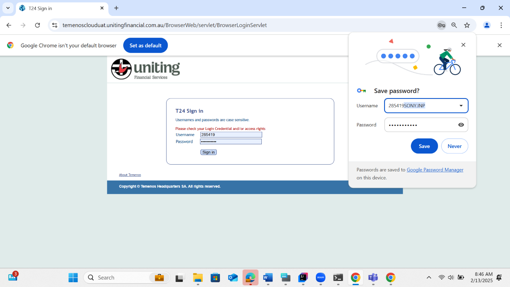
Then User should be able to login to T24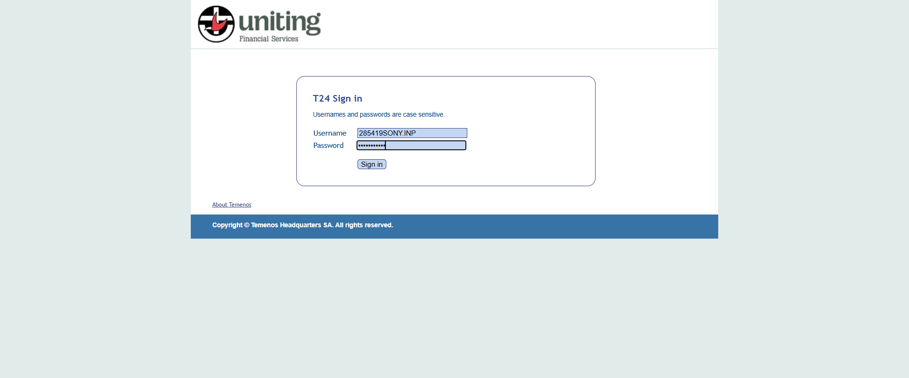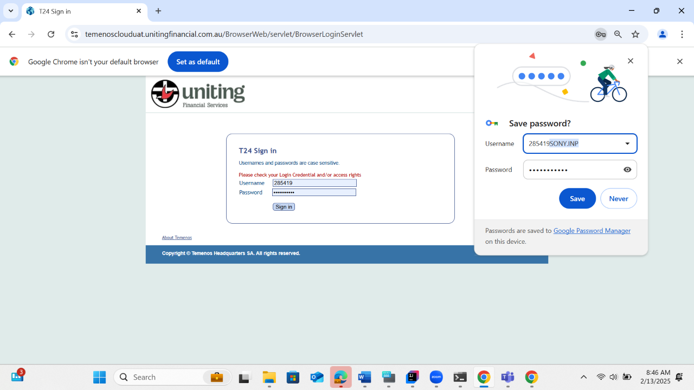
 Then The user should be able to fill the commandlineAnd The user should be able to click on general enquiries buttomAnd click on the IB-view of account entriesThen Enter the account number of internal transfer-IBAnd click on find buttonThen verify whether the narratives of internal trasfer-IB is reflected in the IB-view of account entriesFailPerform Internal Transfer IB futureFailPerform Internal Transfer IB futureWhen close all the other opened windows before loading the urlWhen User opens the IB URL
Then The user should be able to fill the commandlineAnd The user should be able to click on general enquiries buttomAnd click on the IB-view of account entriesThen Enter the account number of internal transfer-IBAnd click on find buttonThen verify whether the narratives of internal trasfer-IB is reflected in the IB-view of account entriesFailPerform Internal Transfer IB futureFailPerform Internal Transfer IB futureWhen close all the other opened windows before loading the urlWhen User opens the IB URL Given I login with username "298010" and password "Temenos@123" of IB
Given I login with username "298010" and password "Temenos@123" of IB And click on Go to AccountsAnd click on Transfers and Pay buttonThen click on transfer buttonThen Enter the future transaction details in IB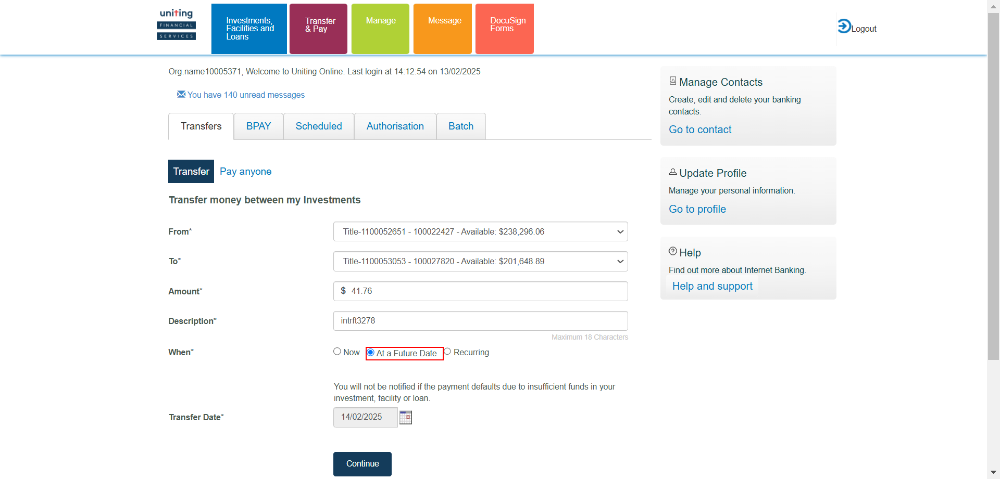And click on continue buttonThen confirm the Internal transfer future payment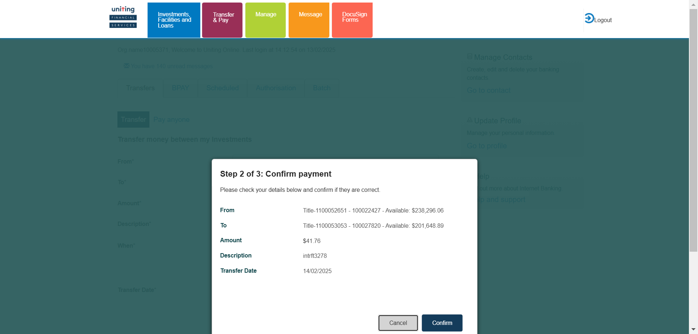And Review the internal transfer future payment
And click on Go to AccountsAnd click on Transfers and Pay buttonThen click on transfer buttonThen Enter the future transaction details in IB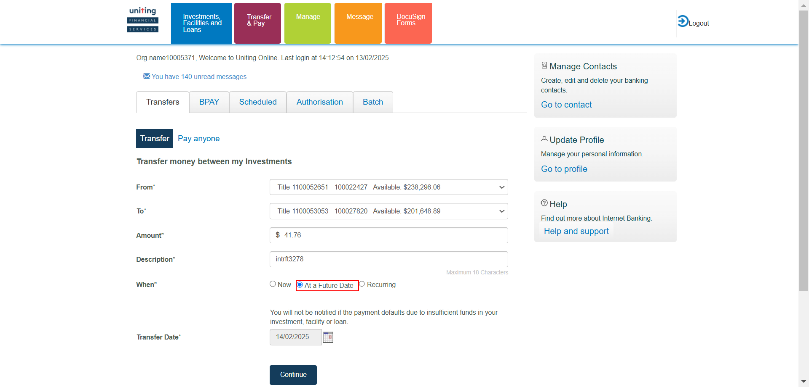And click on continue buttonThen confirm the Internal transfer future payment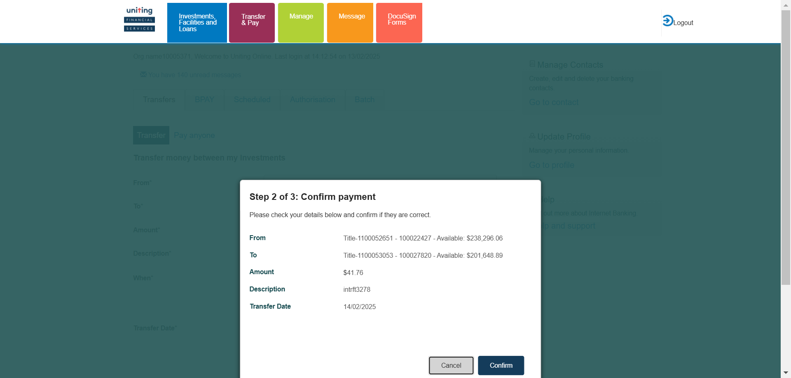And Review the internal transfer future payment Then logout from IbAnd Login to authorizer account with username "
Then logout from IbAnd Login to authorizer account with username ""and password " " And click on Go to AccountsAnd click on Transfers and Pay buttoncom.frameium.stepdef.Hooks.afterEveryStep(io.cucumber.java.Scenario)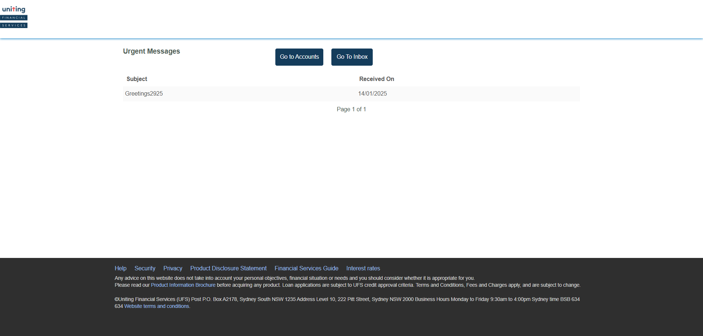Then click on Authorization buttonStep skippedAnd Authorize the internal transfer futureStep skippedThen Review authorization that the details of internal transfer future is reflected correctlyStep skippedPassPerform Internal Transfer IB RecurringPassPerform Internal Transfer IB RecurringWhen close all the other opened windows before loading the urlWhen User opens the IB URL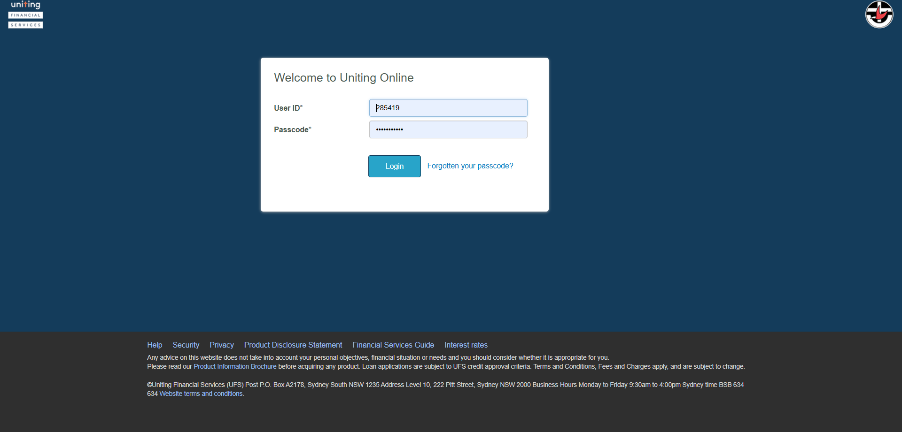Given I login with username "298010" and password "Temenos@123" of IB And click on Go to AccountsAnd click on Transfers and Pay buttonThen click on transfer buttonThen Enter the Internal Recurring transaction details in IBAnd click on continue buttonThen confirm the internal trasfer IB recurring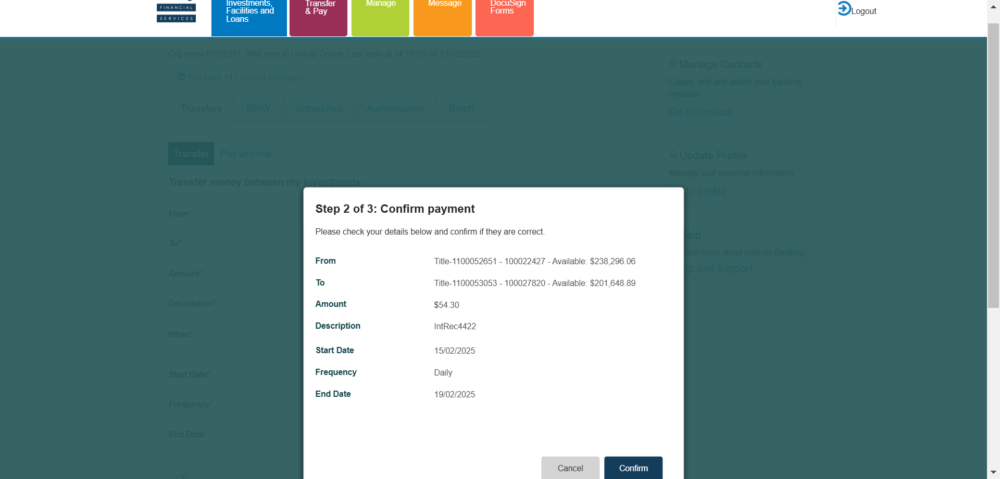And Review the internal transfer Recurring payment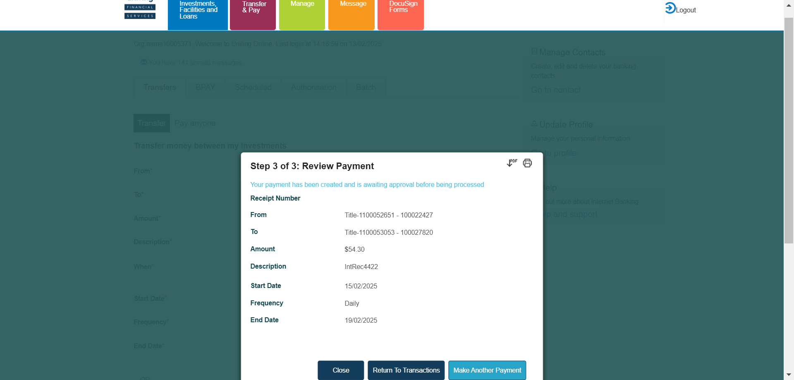Then logout from IbAnd Login to authorizer account with username "
And click on Go to AccountsAnd click on Transfers and Pay buttonThen click on transfer buttonThen Enter the Internal Recurring transaction details in IBAnd click on continue buttonThen confirm the internal trasfer IB recurring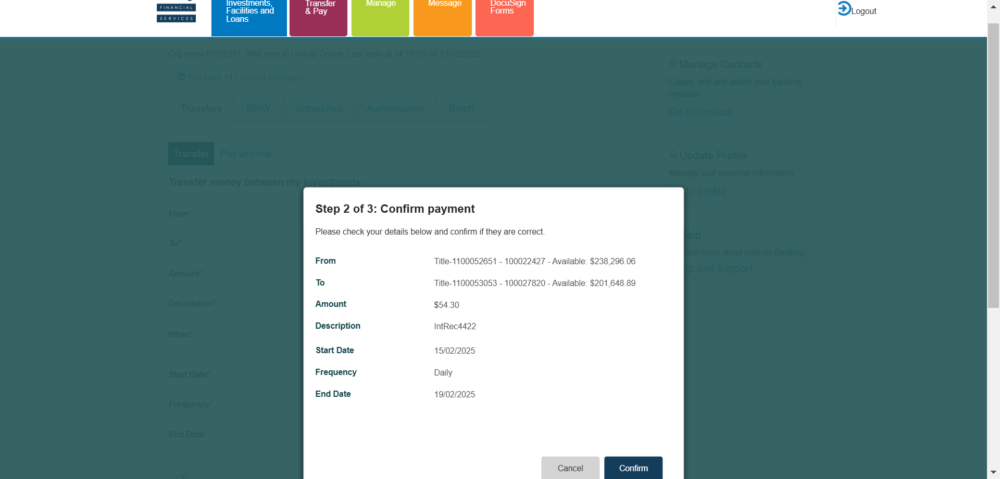And Review the internal transfer Recurring payment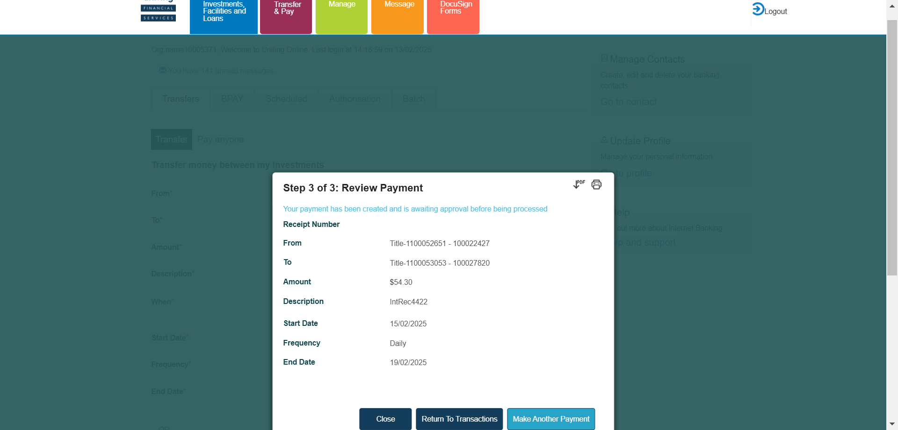Then logout from IbAnd Login to authorizer account with username ""and password " " And click on Go to AccountsAnd click on Transfers and Pay buttonThen click on Authorization buttonAnd Authorize the internal transfer Recurring Then Review authorization that the details of internal transfer Recurring is reflected correctly
Then Review authorization that the details of internal transfer Recurring is reflected correctly FailPerform External Transfer IB saved nowFailPerform External Transfer IB saved nowWhen close all the other opened windows before loading the urlWhen User opens the IB URL
FailPerform External Transfer IB saved nowFailPerform External Transfer IB saved nowWhen close all the other opened windows before loading the urlWhen User opens the IB URL Given I login with username "298010" and password "Temenos@123" of IB
Given I login with username "298010" and password "Temenos@123" of IB And click on Go to AccountsAnd click on Transfers and Pay buttonThen click on transfer buttonAnd Enter the details for external transfer nowThen Confirm the external transfer IB nowcom.frameium.stepdef.Hooks.afterEveryStep(io.cucumber.java.Scenario)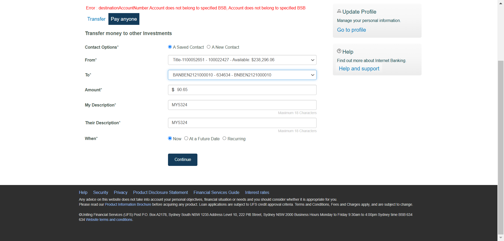And Review the external transfer now paymentStep skippedThen logout from IbStep skippedAnd Login to authorizer account with username "
And click on Go to AccountsAnd click on Transfers and Pay buttonThen click on transfer buttonAnd Enter the details for external transfer nowThen Confirm the external transfer IB nowcom.frameium.stepdef.Hooks.afterEveryStep(io.cucumber.java.Scenario)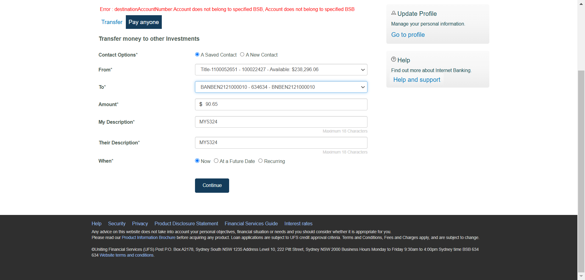And Review the external transfer now paymentStep skippedThen logout from IbStep skippedAnd Login to authorizer account with username ""and password " " Step skippedAnd click on Go to AccountsStep skippedAnd click on Transfers and Pay buttonStep skippedThen click on Authorization buttonStep skippedAnd Authorize the External transfer nowStep skippedThen Review authorization that the details of external transfer is reflected correctlyStep skippedWhen User opens the T24 UrlStep skippedThen User should be able to login to T24Step skippedThen The user should be able to fill the commandlineStep skippedAnd The user should be able to click on general enquiries buttomStep skippedAnd click on the IB-view of account entriesStep skippedThen Enter the account number of External Transfer IB saved nowStep skippedAnd click on find buttonStep skippedThen verify the narratives of External Transfer IB saved nowStep skippedFailExternal Transfer saved IB RecurringFailExternal Transfer saved IB RecurringWhen close all the other opened windows before loading the urlWhen User opens the IB URL Given I login with username "298010" and password "Temenos@123" of IBcom.frameium.stepdef.Hooks.afterEveryStep(io.cucumber.java.Scenario)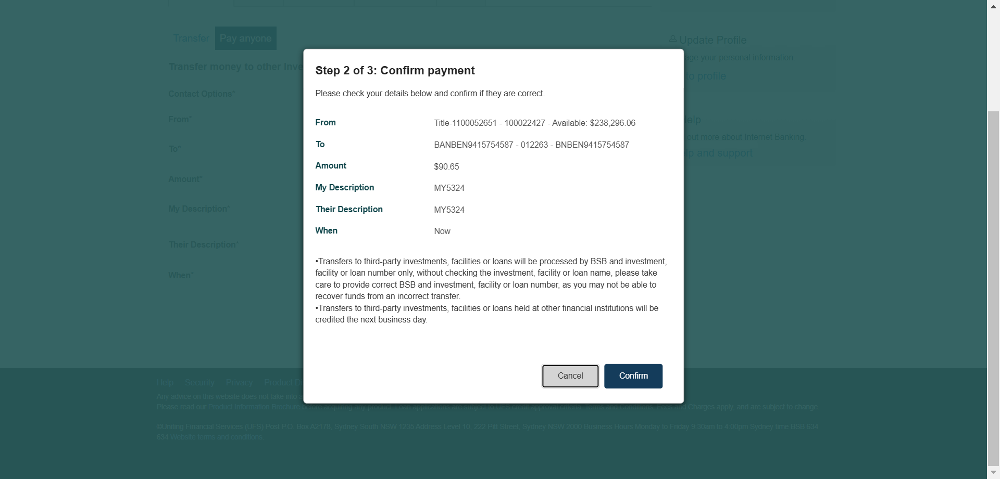And click on Go to AccountsStep skippedAnd click on Transfers and Pay buttonStep skippedThen click on transfer buttonStep skippedAnd Enter the details for external transfer saved recurringStep skippedThen Confirm the external transfer IBStep skippedAnd Review the external transfer recurring paymentStep skippedThen logout from IbStep skippedAnd Login to authorizer account with username "
Given I login with username "298010" and password "Temenos@123" of IBcom.frameium.stepdef.Hooks.afterEveryStep(io.cucumber.java.Scenario)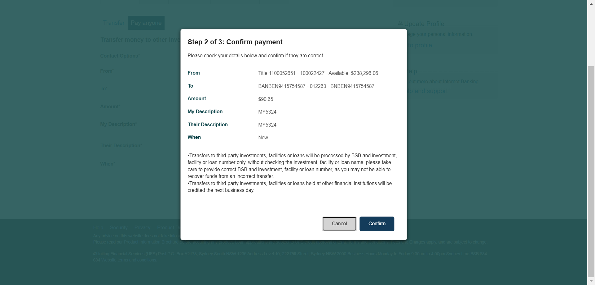And click on Go to AccountsStep skippedAnd click on Transfers and Pay buttonStep skippedThen click on transfer buttonStep skippedAnd Enter the details for external transfer saved recurringStep skippedThen Confirm the external transfer IBStep skippedAnd Review the external transfer recurring paymentStep skippedThen logout from IbStep skippedAnd Login to authorizer account with username ""and password " " Step skippedAnd click on Go to AccountsStep skippedAnd click on Transfers and Pay buttonStep skippedThen click on Authorization buttonStep skippedAnd Authorize the External transfer recurring savedStep skippedThen Review authorization that the details of external transfer recurring is reflected correctlyStep skippedFailExternal Transfer saved IB futureFailExternal Transfer saved IB futureWhen close all the other opened windows before loading the urlWhen User opens the IB URLGiven I login with username "298010" and password "Temenos@123" of IB And click on Go to AccountsAnd click on Transfers and Pay buttonThen click on transfer buttonThen Enter the external future transaction details in IB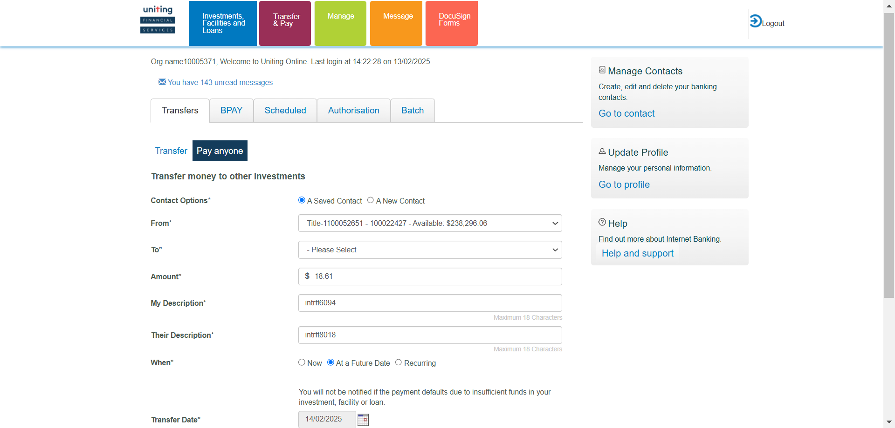And click on continue buttonThen confirm the External transfer future payment
And click on Go to AccountsAnd click on Transfers and Pay buttonThen click on transfer buttonThen Enter the external future transaction details in IB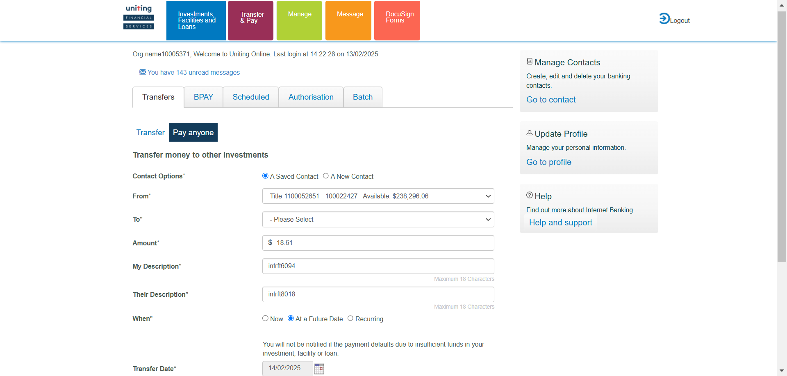And click on continue buttonThen confirm the External transfer future payment And Review the External transfer future payment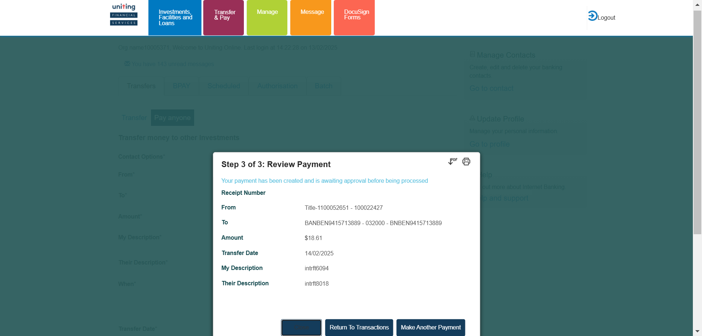Then logout from IbAnd Login to authorizer account with username "
And Review the External transfer future payment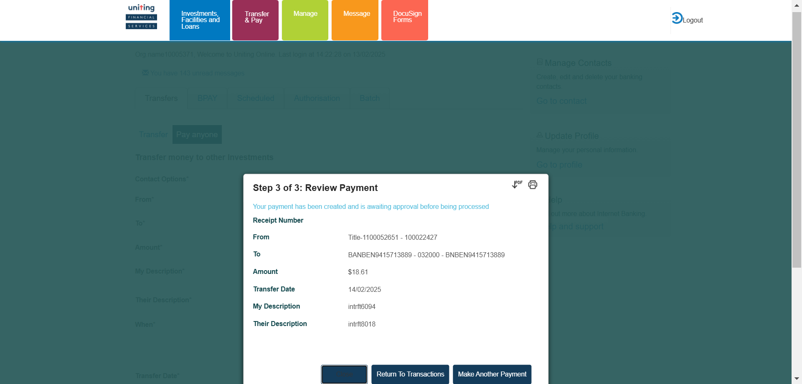Then logout from IbAnd Login to authorizer account with username ""and password " " And click on Go to AccountsAnd click on Transfers and Pay buttoncom.frameium.stepdef.Hooks.afterEveryStep(io.cucumber.java.Scenario) Then click on Authorization buttonStep skippedAnd Authorize the External transfer futureStep skippedThen Review authorization that the details of External transfer future is reflected correctlyStep skippedPassPerform External Transfer IB new contact nowPassPerform External Transfer IB new contact nowWhen close all the other opened windows before loading the urlWhen User opens the IB URL
Then click on Authorization buttonStep skippedAnd Authorize the External transfer futureStep skippedThen Review authorization that the details of External transfer future is reflected correctlyStep skippedPassPerform External Transfer IB new contact nowPassPerform External Transfer IB new contact nowWhen close all the other opened windows before loading the urlWhen User opens the IB URL Given I login with username "298010" and password "Temenos@123" of IB
Given I login with username "298010" and password "Temenos@123" of IB And click on Go to AccountsAnd click on Transfers and Pay buttonThen click on transfer buttonAnd Enter the details for external transfer new contact nowThen Confirm the external transfer IB new ContactAnd Review the external transfer new contact now payment
And click on Go to AccountsAnd click on Transfers and Pay buttonThen click on transfer buttonAnd Enter the details for external transfer new contact nowThen Confirm the external transfer IB new ContactAnd Review the external transfer new contact now payment Then logout from IbAnd Login to authorizer account with username "
Then logout from IbAnd Login to authorizer account with username ""and password " " And click on Go to AccountsAnd click on Transfers and Pay buttonThen click on Authorization buttonAnd Authorize the External transfer new contact now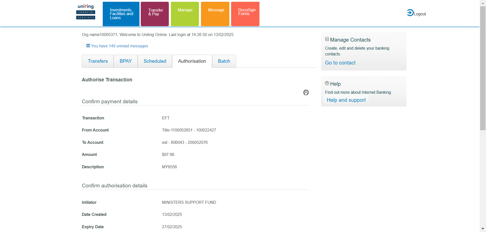Then Review authorization that Taccountthe details of external transfer new contact now is reflected correctly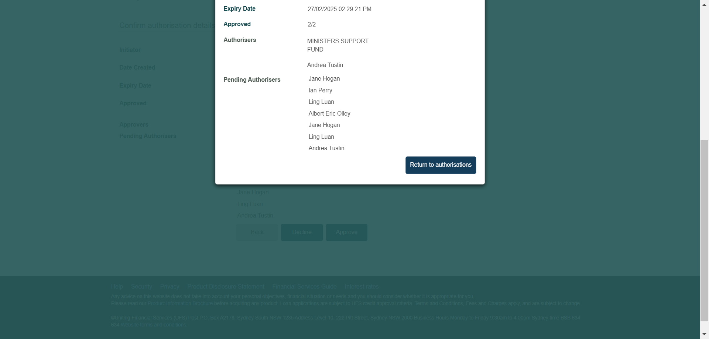Then logout from IbWhen User opens the T24 Url Then User should be able to login to T24
Then User should be able to login to T24

 Then The user should be able to fill the commandlineAnd The user should be able to click on general enquiries buttomAnd click on the IB-view of account entriesThen Enter the account number of Transfer IB new contact nowAnd click on find buttonThen verify the narratives of Transfer IB new contact nowPassPerform External Transfer IB new contact RecurringPassPerform External Transfer IB new contact RecurringWhen close all the other opened windows before loading the urlWhen User opens the IB URL
Then The user should be able to fill the commandlineAnd The user should be able to click on general enquiries buttomAnd click on the IB-view of account entriesThen Enter the account number of Transfer IB new contact nowAnd click on find buttonThen verify the narratives of Transfer IB new contact nowPassPerform External Transfer IB new contact RecurringPassPerform External Transfer IB new contact RecurringWhen close all the other opened windows before loading the urlWhen User opens the IB URL Given I login with username "298010" and password "Temenos@123" of IB
Given I login with username "298010" and password "Temenos@123" of IB And click on Go to AccountsAnd click on Transfers and Pay buttonThen click on transfer buttonAnd Enter the details for external transfer new contact RecurringThen Confirm the external transfer IB new Contact RecurringAnd Review the external transfer new contact Recurring paymentThen logout from IbAnd Login to authorizer account with username "
And click on Go to AccountsAnd click on Transfers and Pay buttonThen click on transfer buttonAnd Enter the details for external transfer new contact RecurringThen Confirm the external transfer IB new Contact RecurringAnd Review the external transfer new contact Recurring paymentThen logout from IbAnd Login to authorizer account with username ""and password " " And click on Go to AccountsAnd click on Transfers and Pay buttonThen click on Authorization buttonAnd Authorize the External transfer new contact Recurring Then Review authorization that the details of external transfer new contact recurring is reflected correctly
Then Review authorization that the details of external transfer new contact recurring is reflected correctly FailPerform External Transfer IB new contact futureFailPerform External Transfer IB new contact futureWhen close all the other opened windows before loading the urlWhen User opens the IB URLGiven I login with username "298010" and password "Temenos@123" of IB
FailPerform External Transfer IB new contact futureFailPerform External Transfer IB new contact futureWhen close all the other opened windows before loading the urlWhen User opens the IB URLGiven I login with username "298010" and password "Temenos@123" of IB And click on Go to AccountsAnd click on Transfers and Pay buttonThen click on transfer buttonAnd Enter the details for external transfer new contact futureThen Confirm the external transfer IB new Contact futurecom.frameium.stepdef.Hooks.afterEveryStep(io.cucumber.java.Scenario)
And click on Go to AccountsAnd click on Transfers and Pay buttonThen click on transfer buttonAnd Enter the details for external transfer new contact futureThen Confirm the external transfer IB new Contact futurecom.frameium.stepdef.Hooks.afterEveryStep(io.cucumber.java.Scenario) And Review the external transfer new contact future paymentStep skippedThen logout from IbStep skippedAnd Login to authorizer account with username "
And Review the external transfer new contact future paymentStep skippedThen logout from IbStep skippedAnd Login to authorizer account with username ""and password " " Step skippedAnd click on Go to AccountsStep skippedAnd click on Transfers and Pay buttonStep skippedThen click on Authorization buttonStep skippedAnd Authorize the External transfer new contact futureStep skippedThen Review authorization that the details of external transfer new contact future is reflected correctlyStep skippedPassBpay now saved contactPassBpay now saved contactWhen close all the other opened windows before loading the urlWhen User opens the IB URL Given I login with username "298010" and password "Temenos@123" of IB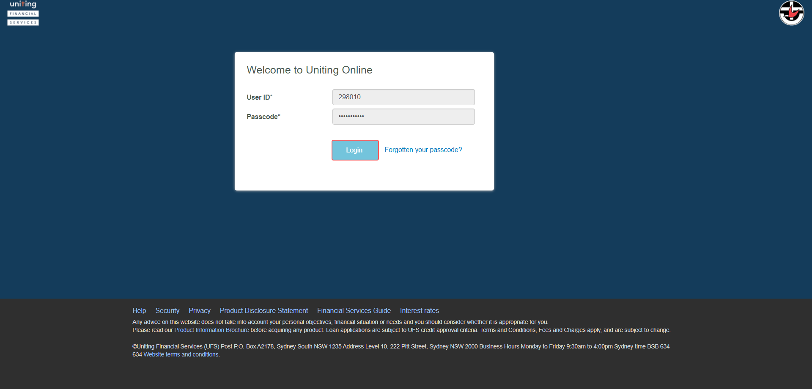And click on Go to AccountsAnd click on Transfers and Pay buttonThen click on transfer buttonThen Click on BpayThen Enter the Bpay detailsAnd confirm Bpay saved paymentAnd Review the BPAY saved contact now
Given I login with username "298010" and password "Temenos@123" of IB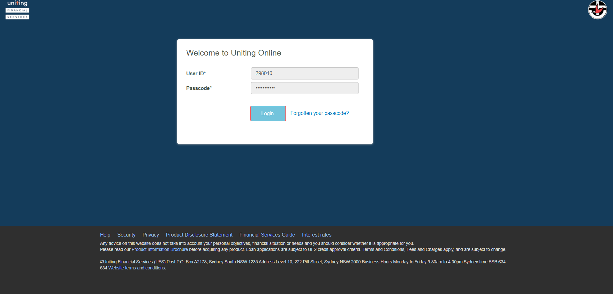And click on Go to AccountsAnd click on Transfers and Pay buttonThen click on transfer buttonThen Click on BpayThen Enter the Bpay detailsAnd confirm Bpay saved paymentAnd Review the BPAY saved contact now Then logout from IbAnd Login to authorizer account with username "
Then logout from IbAnd Login to authorizer account with username ""and password " " And click on Go to AccountsAnd click on Transfers and Pay buttonThen click on Authorization buttonThen Authorize the Bpay transfer now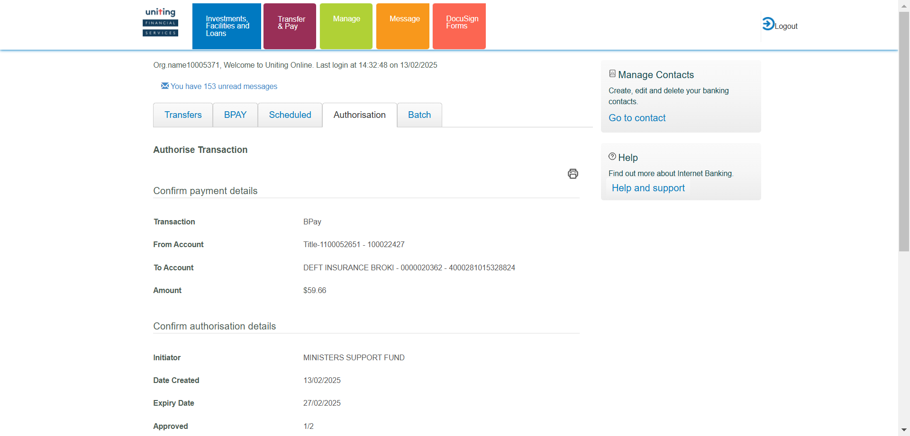Then Review authorization that the details of BPAY saved now is reflected correctly When User opens the T24 Url
When User opens the T24 Url Then User should be able to login to T24
Then User should be able to login to T24 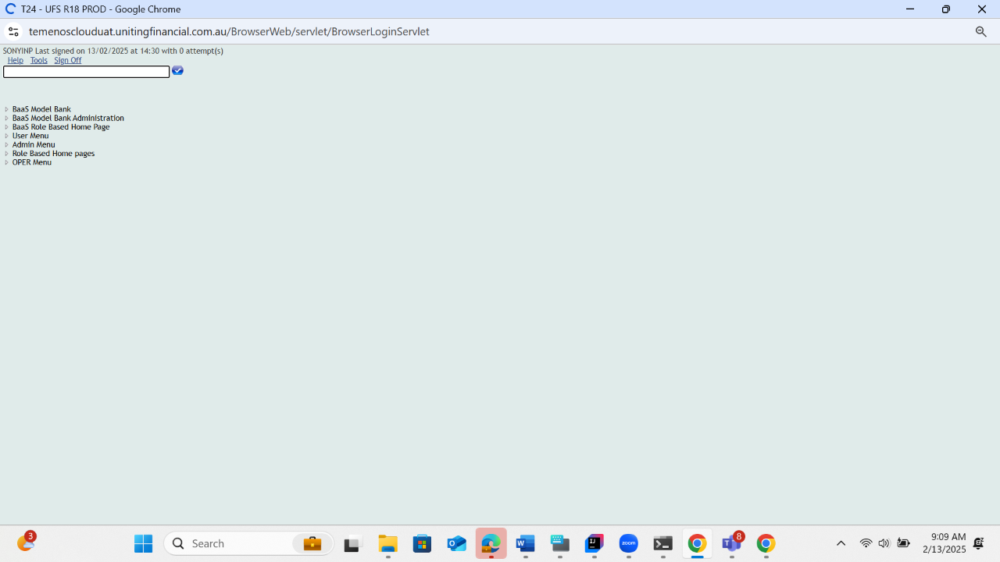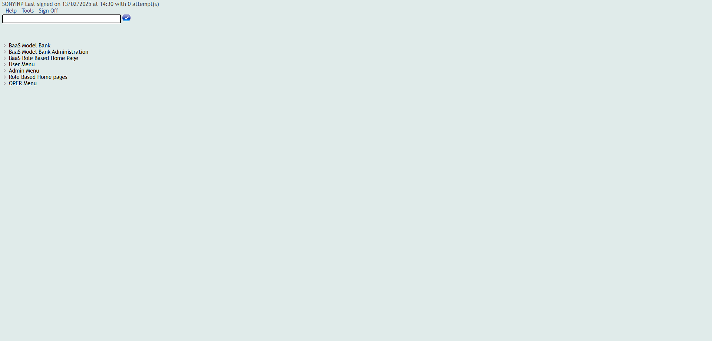
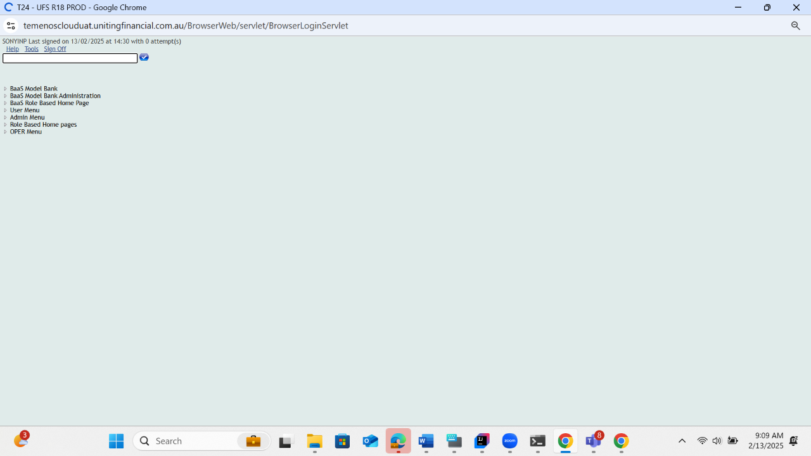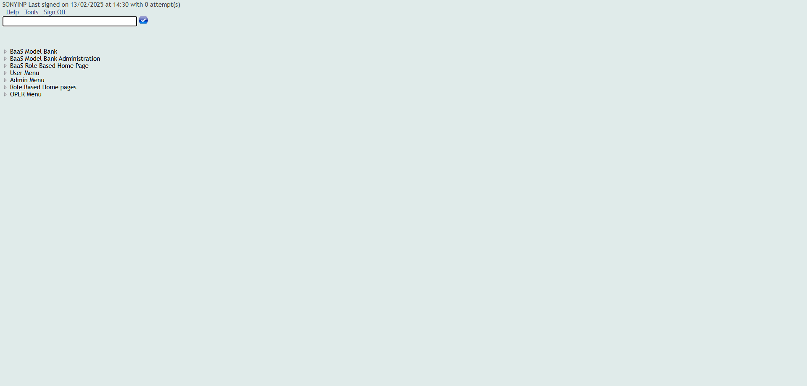 Then The user should be able to fill the commandlineAnd The user should be able to click on general enquiries buttomAnd click on the IB-view of account entriesThen Enter the account number of Bpay now saved contactAnd click on find buttonThen verify the narratives of Bpay now saved contactFailBpay future saved contactFailBpay future saved contactWhen close all the other opened windows before loading the urlWhen User opens the IB URL
Then The user should be able to fill the commandlineAnd The user should be able to click on general enquiries buttomAnd click on the IB-view of account entriesThen Enter the account number of Bpay now saved contactAnd click on find buttonThen verify the narratives of Bpay now saved contactFailBpay future saved contactFailBpay future saved contactWhen close all the other opened windows before loading the urlWhen User opens the IB URL Given I login with username "298010" and password "Temenos@123" of IB
Given I login with username "298010" and password "Temenos@123" of IB And click on Go to AccountsAnd click on Transfers and Pay buttonThen click on transfer buttonThen Click on BpayThen Enter the Bpay future detailsAnd confirm Bpay saved payment futureAnd Review the BPAY saved contact future
And click on Go to AccountsAnd click on Transfers and Pay buttonThen click on transfer buttonThen Click on BpayThen Enter the Bpay future detailsAnd confirm Bpay saved payment futureAnd Review the BPAY saved contact future Then logout from IbAnd Login to authorizer account with username "
Then logout from IbAnd Login to authorizer account with username ""and password " " com.frameium.stepdef.Hooks.afterEveryStep(io.cucumber.java.Scenario)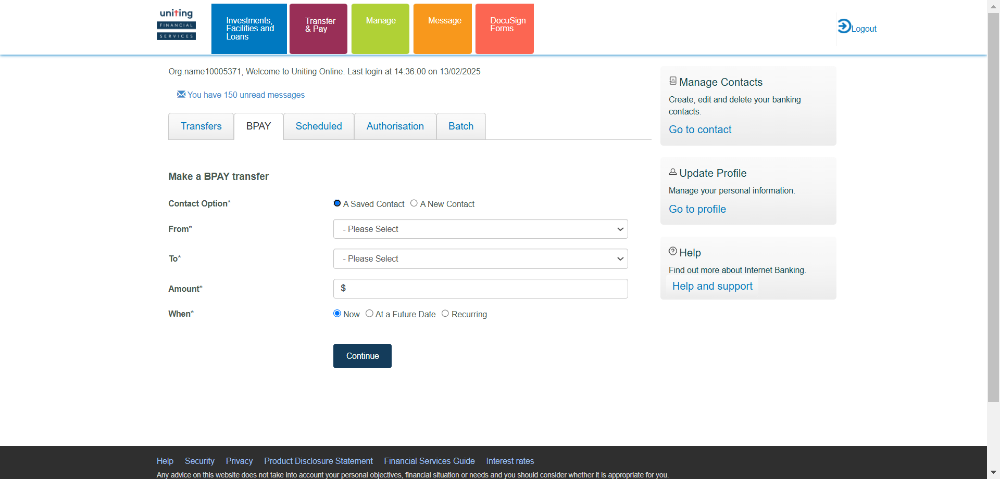And click on Go to AccountsStep skippedAnd click on Transfers and Pay buttonStep skippedThen click on Authorization buttonStep skippedThen Authorize the Bpay transfer futureStep skippedThen Review authorization that the details of BPAY future is reflected correctlyStep skippedFailBpay recurrring saved contactFailBpay recurrring saved contactWhen close all the other opened windows before loading the urlWhen User opens the IB URL Given I login with username "298010" and password "Temenos@123" of IB
Given I login with username "298010" and password "Temenos@123" of IB And click on Go to AccountsAnd click on Transfers and Pay buttonThen click on transfer buttonThen Click on Bpaycom.frameium.stepdef.Hooks.afterEveryStep(io.cucumber.java.Scenario)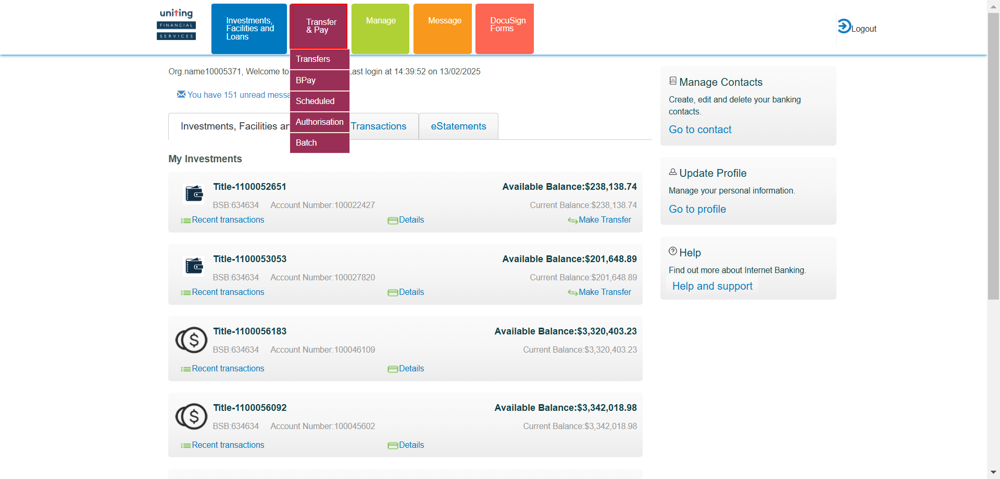Then Enter the Bpay recurring detailsStep skippedAnd confirm Bpay saved payment recurringStep skippedAnd Review the BPAY saved contact recurringStep skippedThen logout from IbStep skippedAnd Login to authorizer account with username "
And click on Go to AccountsAnd click on Transfers and Pay buttonThen click on transfer buttonThen Click on Bpaycom.frameium.stepdef.Hooks.afterEveryStep(io.cucumber.java.Scenario)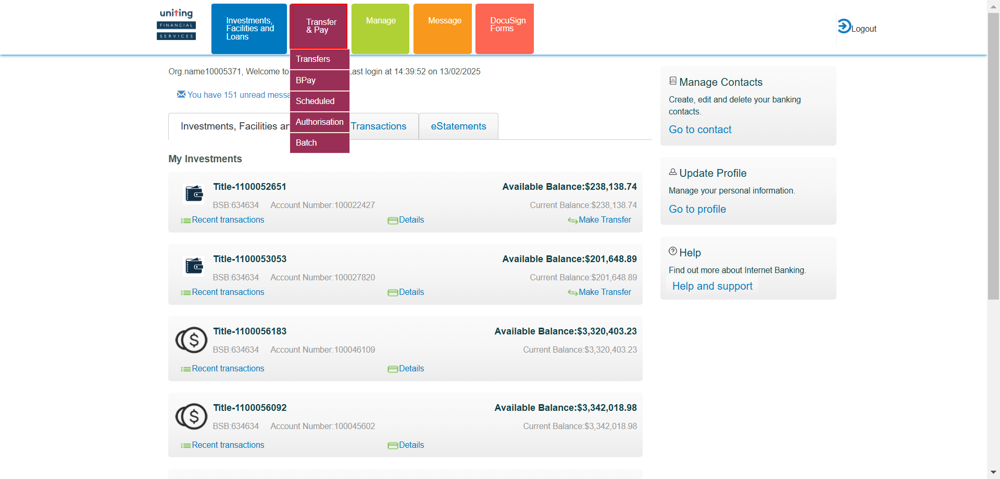Then Enter the Bpay recurring detailsStep skippedAnd confirm Bpay saved payment recurringStep skippedAnd Review the BPAY saved contact recurringStep skippedThen logout from IbStep skippedAnd Login to authorizer account with username ""and password " " Step skippedAnd click on Go to AccountsStep skippedAnd click on Transfers and Pay buttonStep skippedThen click on Authorization buttonStep skippedThen Authorize the Bpay transfer recurringStep skippedThen Review authorization that the details of BPAY saved contact recurring is reflected correctlyStep skippedFailBpay now new contactFailBpay now new contactWhen close all the other opened windows before loading the urlWhen User opens the IB URL Given I login with username "298010" and password "Temenos@123" of IBAnd click on Go to AccountsAnd click on Transfers and Pay buttonThen click on transfer buttonThen Click on Bpaycom.frameium.stepdef.Hooks.afterEveryStep(io.cucumber.java.Scenario)Then Enter the Bpay new contact detailsStep skippedAnd confirm Bpay new contact paymentStep skippedAnd Review the BPAY new contact nowStep skippedThen logout from IbStep skippedAnd Login to authorizer account with username "
Given I login with username "298010" and password "Temenos@123" of IBAnd click on Go to AccountsAnd click on Transfers and Pay buttonThen click on transfer buttonThen Click on Bpaycom.frameium.stepdef.Hooks.afterEveryStep(io.cucumber.java.Scenario)Then Enter the Bpay new contact detailsStep skippedAnd confirm Bpay new contact paymentStep skippedAnd Review the BPAY new contact nowStep skippedThen logout from IbStep skippedAnd Login to authorizer account with username ""and password " " Step skippedAnd click on Go to AccountsStep skippedAnd click on Transfers and Pay buttonStep skippedThen click on Authorization buttonStep skippedThen Authorize the Bpay transfer new contact nowStep skippedThen Review authorization that the details of BPAY now is reflected correctlyStep skippedWhen User opens the T24 UrlStep skippedThen User should be able to login to T24Step skippedThen The user should be able to fill the commandlineStep skippedAnd The user should be able to click on general enquiries buttomStep skippedAnd click on the IB-view of account entriesStep skippedThen Enter the account number of Bpay now new contactStep skippedAnd click on find buttonStep skippedThen verify the narratives of Bpay now new contactStep skippedFailBpay recurring new contactFailBpay recurring new contactWhen close all the other opened windows before loading the urlWhen User opens the IB URL Given I login with username "298010" and password "Temenos@123" of IB
Given I login with username "298010" and password "Temenos@123" of IB And click on Go to AccountsAnd click on Transfers and Pay buttonThen click on transfer buttonThen Click on Bpaycom.frameium.stepdef.Hooks.afterEveryStep(io.cucumber.java.Scenario)Then Enter the Bpay new contact recurring detailsStep skippedAnd confirm Bpay new contact recurring paymentStep skippedAnd Review the BPAY new contact recurringStep skippedThen logout from IbStep skippedAnd Login to authorizer account with username "
And click on Go to AccountsAnd click on Transfers and Pay buttonThen click on transfer buttonThen Click on Bpaycom.frameium.stepdef.Hooks.afterEveryStep(io.cucumber.java.Scenario)Then Enter the Bpay new contact recurring detailsStep skippedAnd confirm Bpay new contact recurring paymentStep skippedAnd Review the BPAY new contact recurringStep skippedThen logout from IbStep skippedAnd Login to authorizer account with username ""and password " " Step skippedAnd click on Go to AccountsStep skippedAnd click on Transfers and Pay buttonStep skippedThen click on Authorization buttonStep skippedThen Authorize the Bpay transfer new contact recurringStep skippedThen Review authorization that the details of BPAY recurring is reflected correctlyStep skippedFailBpay future new contactFailBpay future new contactWhen close all the other opened windows before loading the urlWhen User opens the IB URL Given I login with username "298010" and password "Temenos@123" of IB
Given I login with username "298010" and password "Temenos@123" of IB And click on Go to AccountsAnd click on Transfers and Pay buttonThen click on transfer buttonThen Click on Bpaycom.frameium.stepdef.Hooks.afterEveryStep(io.cucumber.java.Scenario)Then Enter the Bpay new contact future detailsStep skippedAnd confirm Bpay new contact future paymentStep skippedAnd Review the BPAY new contact futureStep skippedThen logout from IbStep skippedAnd Login to authorizer account with username "
And click on Go to AccountsAnd click on Transfers and Pay buttonThen click on transfer buttonThen Click on Bpaycom.frameium.stepdef.Hooks.afterEveryStep(io.cucumber.java.Scenario)Then Enter the Bpay new contact future detailsStep skippedAnd confirm Bpay new contact future paymentStep skippedAnd Review the BPAY new contact futureStep skippedThen logout from IbStep skippedAnd Login to authorizer account with username ""and password " " Step skippedAnd click on Go to AccountsStep skippedAnd click on Transfers and Pay buttonStep skippedThen click on Authorization buttonStep skippedThen Authorize the Bpay transfer new contact futureStep skippedThen Review authorization that the details of BPAY future new contact is reflected correctlyStep skippedFailSecure and Urgent messageFailSecure and Urgent messageWhen close all the other opened windows before loading the urlWhen User opens the IBM URL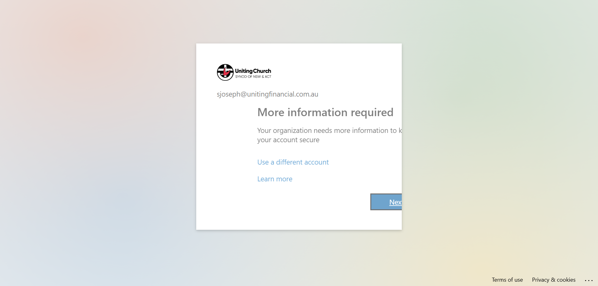When Login to IBMcom.frameium.stepdef.Hooks.afterEveryStep(io.cucumber.java.Scenario) When we send the Normal messageStep skippedWhen We send the urgent messageStep skippedWhen User opens the IB URLStep skippedGiven I login with username "298010" and password "Temenos@123" of IBStep skippedThen verify whether the urgent message is displayed in the landing pageStep skippedAnd click on Go to AccountsStep skippedThen check whether the urgent message is displayed on the inboxStep skippedThen check whether the normal message is displayed on the inboxStep skippedFailpassword changeFailpassword changeWhen close all the other opened windows before loading the urlWhen User opens the IB URL
When we send the Normal messageStep skippedWhen We send the urgent messageStep skippedWhen User opens the IB URLStep skippedGiven I login with username "298010" and password "Temenos@123" of IBStep skippedThen verify whether the urgent message is displayed in the landing pageStep skippedAnd click on Go to AccountsStep skippedThen check whether the urgent message is displayed on the inboxStep skippedThen check whether the normal message is displayed on the inboxStep skippedFailpassword changeFailpassword changeWhen close all the other opened windows before loading the urlWhen User opens the IB URL When Login to IB for changing passwordAnd click on Go to AccountsWhen click on pasword changecom.frameium.stepdef.Hooks.afterEveryStep(io.cucumber.java.Scenario)
When Login to IB for changing passwordAnd click on Go to AccountsWhen click on pasword changecom.frameium.stepdef.Hooks.afterEveryStep(io.cucumber.java.Scenario) When change the passwordStep skippedFailChecking inbox message countFailChecking inbox message countWhen close all the other opened windows before loading the urlWhen User opens the IB URL
When change the passwordStep skippedFailChecking inbox message countFailChecking inbox message countWhen close all the other opened windows before loading the urlWhen User opens the IB URL Given I login with username "298010" and password "Temenos@123" of IBcom.frameium.stepdef.Hooks.afterEveryStep(io.cucumber.java.Scenario)
Given I login with username "298010" and password "Temenos@123" of IBcom.frameium.stepdef.Hooks.afterEveryStep(io.cucumber.java.Scenario) And click on Go to AccountsStep skippedWhen Click on inboxStep skippedWhen read the messageStep skippedThen check whether the message count decreasedStep skippedFailAdding new contacts-transferFailAdding new contacts-transferWhen close all the other opened windows before loading the urlWhen User opens the IB URL
And click on Go to AccountsStep skippedWhen Click on inboxStep skippedWhen read the messageStep skippedThen check whether the message count decreasedStep skippedFailAdding new contacts-transferFailAdding new contacts-transferWhen close all the other opened windows before loading the urlWhen User opens the IB URL Given I login with username "298010" and password "Temenos@123" of IBcom.frameium.stepdef.Hooks.afterEveryStep(io.cucumber.java.Scenario)
Given I login with username "298010" and password "Temenos@123" of IBcom.frameium.stepdef.Hooks.afterEveryStep(io.cucumber.java.Scenario) And click on Go to AccountsStep skippedWhen Click on add contactStep skippedWhen add the new contact detailsStep skippedThen confirm whether the details are correctStep skippedWhen edit the newly added contact detailsStep skippedWhen delete the newly added contactStep skippedFailAdding Editing and Deleting new contacts-BPAYFailAdding Editing and Deleting new contacts-BPAYWhen close all the other opened windows before loading the urlWhen User opens the IB URL
And click on Go to AccountsStep skippedWhen Click on add contactStep skippedWhen add the new contact detailsStep skippedThen confirm whether the details are correctStep skippedWhen edit the newly added contact detailsStep skippedWhen delete the newly added contactStep skippedFailAdding Editing and Deleting new contacts-BPAYFailAdding Editing and Deleting new contacts-BPAYWhen close all the other opened windows before loading the urlWhen User opens the IB URL Given I login with username "298010" and password "Temenos@123" of IBcom.frameium.stepdef.Hooks.afterEveryStep(io.cucumber.java.Scenario)
Given I login with username "298010" and password "Temenos@123" of IBcom.frameium.stepdef.Hooks.afterEveryStep(io.cucumber.java.Scenario) And click on Go to AccountsStep skippedWhen Click on add contactStep skippedWhen add the new contact details of BpayStep skippedThen confirm whether the newly added BPAY details are correctStep skippedWhen edit the newly added BPAY contact detailsStep skippedWhen delete the newly added BPAY contactStep skippedFailSession history IBFailSession history IBWhen close all the other opened windows before loading the urlWhen User opens the IB URL
And click on Go to AccountsStep skippedWhen Click on add contactStep skippedWhen add the new contact details of BpayStep skippedThen confirm whether the newly added BPAY details are correctStep skippedWhen edit the newly added BPAY contact detailsStep skippedWhen delete the newly added BPAY contactStep skippedFailSession history IBFailSession history IBWhen close all the other opened windows before loading the urlWhen User opens the IB URL Given I login with username "298010" and password "Temenos@123" of IBcom.frameium.stepdef.Hooks.afterEveryStep(io.cucumber.java.Scenario)
Given I login with username "298010" and password "Temenos@123" of IBcom.frameium.stepdef.Hooks.afterEveryStep(io.cucumber.java.Scenario) And click on Go to AccountsStep skippedThen check whether the session history is showing the correct detailsStep skippedFailBatch template-Create/edit/deleteFailBatch template-Create/edit/deleteWhen close all the other opened windows before loading the urlWhen User opens the IB URL
And click on Go to AccountsStep skippedThen check whether the session history is showing the correct detailsStep skippedFailBatch template-Create/edit/deleteFailBatch template-Create/edit/deleteWhen close all the other opened windows before loading the urlWhen User opens the IB URL Given I login with username "298010" and password "Temenos@123" of IBcom.frameium.stepdef.Hooks.afterEveryStep(io.cucumber.java.Scenario)
Given I login with username "298010" and password "Temenos@123" of IBcom.frameium.stepdef.Hooks.afterEveryStep(io.cucumber.java.Scenario) And click on Go to AccountsStep skippedAnd click on Transfers and Pay buttonStep skippedThen create new batch templateStep skippedThen Delete the newly created batch templateStep skippedFailCompose messageFailCompose messageWhen close all the other opened windows before loading the urlWhen User opens the IB URL
And click on Go to AccountsStep skippedAnd click on Transfers and Pay buttonStep skippedThen create new batch templateStep skippedThen Delete the newly created batch templateStep skippedFailCompose messageFailCompose messageWhen close all the other opened windows before loading the urlWhen User opens the IB URL Given I login with username "298010" and password "Temenos@123" of IBcom.frameium.stepdef.Hooks.afterEveryStep(io.cucumber.java.Scenario)And click on Go to AccountsStep skippedThen compose messageStep skippedFaildebit batch payment fileFaildebit batch payment fileWhen close all the other opened windows before loading the urlWhen User opens the IB URL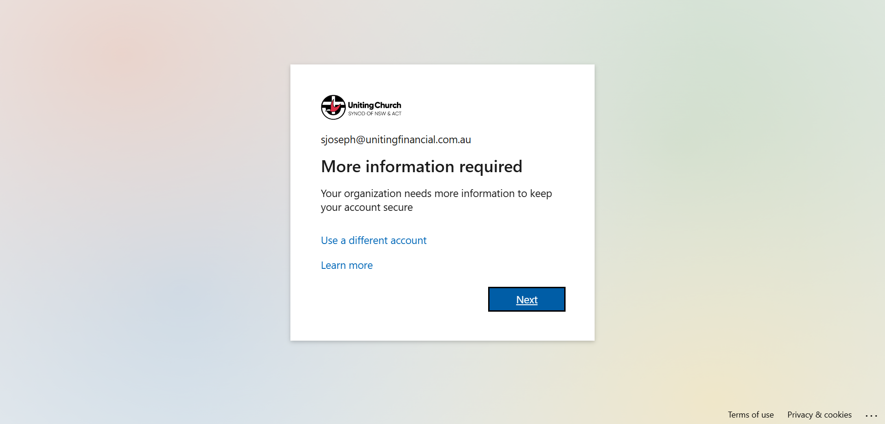Given I login with username "298010" and password "Temenos@123" of IBcom.frameium.stepdef.Hooks.afterEveryStep(io.cucumber.java.Scenario)
Given I login with username "298010" and password "Temenos@123" of IBcom.frameium.stepdef.Hooks.afterEveryStep(io.cucumber.java.Scenario)And click on Go to AccountsStep skippedThen compose messageStep skippedFaildebit batch payment fileFaildebit batch payment fileWhen close all the other opened windows before loading the urlWhen User opens the IB URL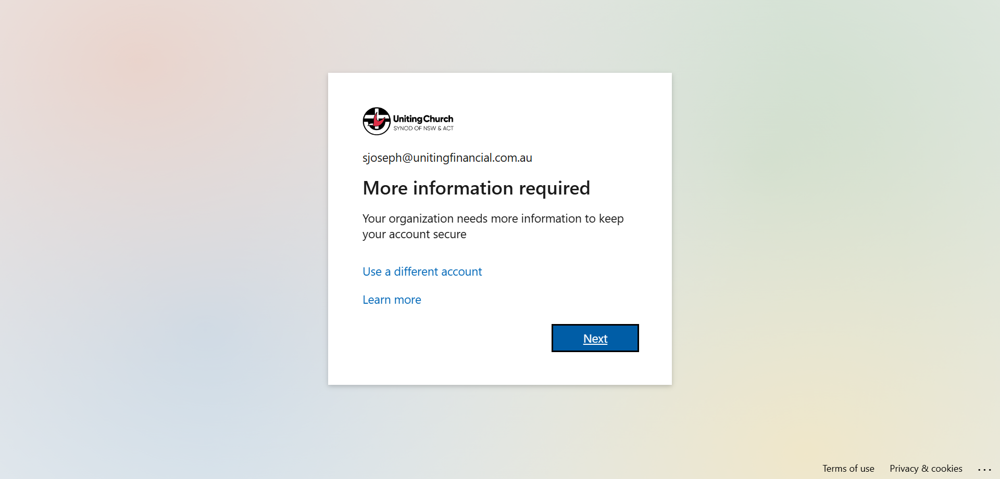Given I login with username "298010" and password "Temenos@123" of IBcom.frameium.stepdef.Hooks.afterEveryStep(io.cucumber.java.Scenario) And click on Go to AccountsStep skippedAnd click on Transfers and Pay buttonStep skippedThen Click on BatchStep skippedAnd Enter the details of batchpayment fileStep skippedThen Review the batch payment fileStep skippedThen logout from IbStep skippedAnd Login to authorizer account with username "
And click on Go to AccountsStep skippedAnd click on Transfers and Pay buttonStep skippedThen Click on BatchStep skippedAnd Enter the details of batchpayment fileStep skippedThen Review the batch payment fileStep skippedThen logout from IbStep skippedAnd Login to authorizer account with username ""and password " " Step skippedAnd click on Go to AccountsStep skippedAnd click on Transfers and Pay buttonStep skippedThen click on Authorization buttonStep skippedAnd open the batch payment using file that need to be authorisedStep skippedThen authorise the batch paymentStep skippedThen review authorization that the details of debitbatchpaymentsfileStep skippedWhen User opens the T24 UrlStep skippedThen User should be able to login to T24Step skippedThen The user should be able to fill the commandlineStep skippedAnd The user should be able to click on general enquiries buttomStep skippedAnd click on the IB-view of account entriesStep skippedThen Enter the account number of debitbatchpaymentsfileStep skippedAnd click on find buttonStep skippedThen verify the narratives of debitbatchpaymentsfileStep skippedFailcredit batch payment fileFailcredit batch payment fileWhen close all the other opened windows before loading the urlWhen User opens the IB URL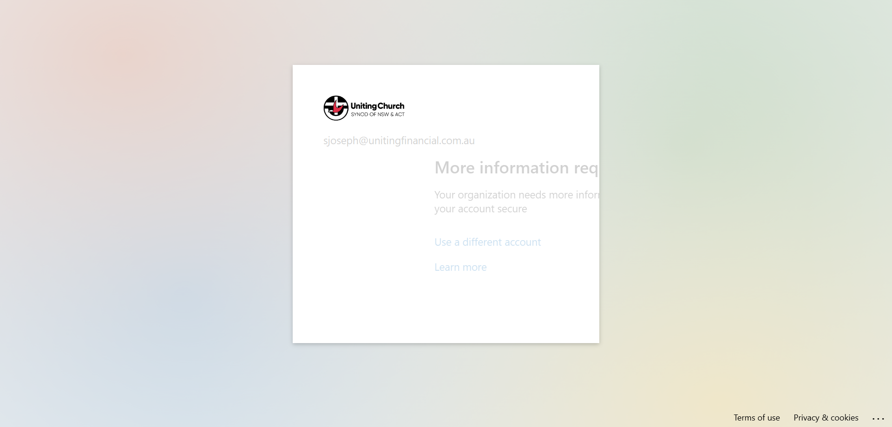Given I login with username "298010" and password "Temenos@123" of IBcom.frameium.stepdef.Hooks.afterEveryStep(io.cucumber.java.Scenario) And click on Go to AccountsStep skippedAnd click on Transfers and Pay buttonStep skippedThen Click on BatchStep skippedAnd Enter the details of Credit batchpayment fileStep skippedThen verify the details of credit batch and Click on Pay now buttonStep skippedThen logout from IbStep skippedAnd Login to authorizer account with username "
And click on Go to AccountsStep skippedAnd click on Transfers and Pay buttonStep skippedThen Click on BatchStep skippedAnd Enter the details of Credit batchpayment fileStep skippedThen verify the details of credit batch and Click on Pay now buttonStep skippedThen logout from IbStep skippedAnd Login to authorizer account with username ""and password " " Step skippedAnd click on Go to AccountsStep skippedAnd click on Transfers and Pay buttonStep skippedThen click on Authorization buttonStep skippedAnd open the batch payment that need to be authorisedStep skippedThen authorise the credit batch payment fileStep skippedThen review authorization that the details of creditbatchpaymentsfileStep skippedWhen User opens the T24 UrlStep skippedThen User should be able to login to T24Step skippedThen The user should be able to fill the commandlineStep skippedAnd The user should be able to click on general enquiries buttomStep skippedAnd click on the IB-view of account entriesStep skippedThen Enter the account number of creditbatchpaymentsfileStep skippedAnd click on find buttonStep skippedThen verify the narratives of creditbatchpaymentsfileStep skippedFailDebit batch paymentFailDebit batch paymentWhen close all the other opened windows before loading the urlWhen User opens the IB URL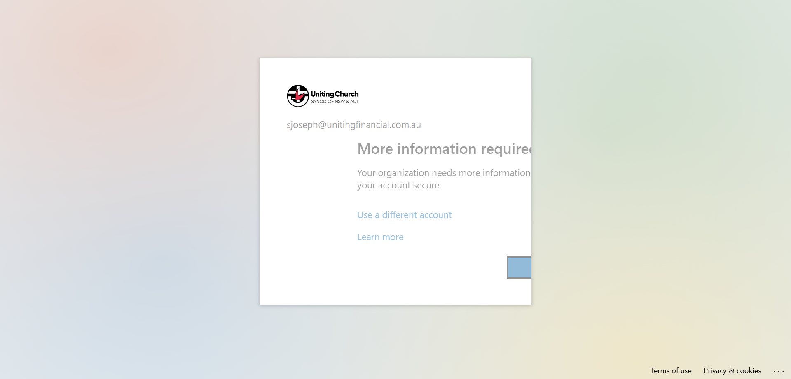Given I login with username "298010" and password "Temenos@123" of IBcom.frameium.stepdef.Hooks.afterEveryStep(io.cucumber.java.Scenario) And click on Go to AccountsStep skippedAnd click on Transfers and Pay buttonStep skippedThen Click on BatchStep skippedAnd Enter the details of Debit batchpaymentStep skippedThen verify the details of debit batch payment and click on Pay now buttonStep skippedThen logout from IbStep skippedAnd Login to authorizer account with username "
And click on Go to AccountsStep skippedAnd click on Transfers and Pay buttonStep skippedThen Click on BatchStep skippedAnd Enter the details of Debit batchpaymentStep skippedThen verify the details of debit batch payment and click on Pay now buttonStep skippedThen logout from IbStep skippedAnd Login to authorizer account with username ""and password " " Step skippedAnd click on Go to AccountsStep skippedAnd click on Transfers and Pay buttonStep skippedThen click on Authorization buttonStep skippedAnd open the debit batch payment that need to be authorisedStep skippedThen authorise the debit batch paymentStep skippedThen review authorization that the details of debit batch paymentStep skippedWhen User opens the T24 UrlStep skippedThen User should be able to login to T24Step skippedThen The user should be able to fill the commandlineStep skippedAnd The user should be able to click on general enquiries buttomStep skippedAnd click on the IB-view of account entriesStep skippedThen Enter the account number of debit batch paymentStep skippedAnd click on find buttonStep skippedAnd verify the narratives of debit batch paymenttStep skippedWhen User opens the IBM URLStep skippedWhen Login to IBMStep skippedThen check the audit log whether the debit batch payment initiated in subIb "298010" scheduled is reflected forStep skippedFailCredit batch payment origiFailCredit batch payment origiWhen close all the other opened windows before loading the urlWhen User opens the IB URL Given I login with username "298010" and password "Temenos@123" of IBcom.frameium.stepdef.Hooks.afterEveryStep(io.cucumber.java.Scenario)
Given I login with username "298010" and password "Temenos@123" of IBcom.frameium.stepdef.Hooks.afterEveryStep(io.cucumber.java.Scenario) And click on Go to AccountsStep skippedAnd click on Transfers and Pay buttonStep skippedThen Click on BatchStep skippedAnd Enter the details of Credit batchpaymentStep skippedThen verify the details and click on Pay now button creditStep skippedThen logout from IbStep skippedAnd Login to authorizer account with username "
And click on Go to AccountsStep skippedAnd click on Transfers and Pay buttonStep skippedThen Click on BatchStep skippedAnd Enter the details of Credit batchpaymentStep skippedThen verify the details and click on Pay now button creditStep skippedThen logout from IbStep skippedAnd Login to authorizer account with username ""and password " " Step skippedAnd click on Go to AccountsStep skippedAnd click on Transfers and Pay buttonStep skippedThen click on Authorization buttonStep skippedAnd open the credit batch payment that need to be authorisedStep skippedThen authorise the credit batch paymentStep skippedThen review authorization that the details of creditbatchpaymentStep skippedThen logout from IbStep skippedWhen User opens the T24 UrlStep skippedThen User should be able to login to T24Step skippedThen The user should be able to fill the commandlineStep skippedAnd The user should be able to click on general enquiries buttomStep skippedAnd click on the IB-view of account entriesStep skippedThen Enter the account number of creditbatchpaymentStep skippedAnd click on find buttonStep skippedThen verify the narratives of creditbatchpaymenttStep skippedWhen User opens the IBM URLStep skippedWhen Login to IBMStep skippedThen check click on Reporting and select all batchesStep skippedThen Verify the IBM reporting that the Batch payment status is postedStep skippedFailDebit batch payment TemplateFailDebit batch payment TemplateWhen close all the other opened windows before loading the urlWhen User opens the IB URL Given I login with username "298010" and password "Temenos@123" of IBcom.frameium.stepdef.Hooks.afterEveryStep(io.cucumber.java.Scenario)
Given I login with username "298010" and password "Temenos@123" of IBcom.frameium.stepdef.Hooks.afterEveryStep(io.cucumber.java.Scenario) And click on Go to AccountsStep skippedAnd click on Transfers and Pay buttonStep skippedThen Click on BatchStep skippedAnd Enter the details of Debit batchpayment templateStep skippedThen verify the details and click on Pay now buttonStep skippedThen logout from IbStep skippedAnd Login to authorizer account with username "
And click on Go to AccountsStep skippedAnd click on Transfers and Pay buttonStep skippedThen Click on BatchStep skippedAnd Enter the details of Debit batchpayment templateStep skippedThen verify the details and click on Pay now buttonStep skippedThen logout from IbStep skippedAnd Login to authorizer account with username ""and password " " Step skippedAnd click on Go to AccountsStep skippedAnd click on Transfers and Pay buttonStep skippedThen click on Authorization buttonStep skippedAnd open the debit batch payment template that need to be authorisedStep skippedThen authorise the debit batch template paymentStep skippedThen review authorization details of debitbatchpayment templateStep skippedThen logout from IbStep skippedWhen User opens the T24 UrlStep skippedThen User should be able to login to T24Step skippedThen The user should be able to fill the commandlineStep skippedAnd The user should be able to click on general enquiries buttomStep skippedAnd click on the IB-view of account entriesStep skippedThen Enter the account number of debit batch payment templateStep skippedAnd click on find buttonStep skippedThen verify the narratives of debit batch payment templateStep skippedFailSingle sign onFailSingle sign onWhen close all the other opened windows before loading the urlcom.frameium.stepdef.Ufs.IBPayments.afterStep(io.cucumber.java.Scenario)com.frameium.stepdef.Hooks.afterEveryStep(io.cucumber.java.Scenario)When User opens the IBM URLStep skippedWhen Login to IBMStep skippedThen retrieve the clientStep skippedAnd get client numbers having single signonStep skippedWhen User opens the T24 UrlStep skippedThen User should be able to login to T24Step skippedThen The user should be able to fill the commandlineStep skippedThen check the total investment facilities in the customer overview screenStep skippedWhen User opens the IB URLStep skippedGiven I login with username "237675" and password "Temenos@123" of IBStep skippedAnd click on Go to AccountsStep skippedThen check the single sign on dropdwownStep skippedThen select the account from single sign on dropdown and check the investment facilitiesStep skippedFailBatchpaymentfailureFailBatchpaymentfailureWhen close all the other opened windows before loading the urlcom.frameium.stepdef.Ufs.IBPayments.afterStep(io.cucumber.java.Scenario)com.frameium.stepdef.Hooks.afterEveryStep(io.cucumber.java.Scenario)When User opens the IB URLStep skippedGiven I login with username "298010" and password "Temenos@123" of IBStep skippedAnd click on Go to AccountsStep skippedAnd click on Transfers and Pay buttonStep skippedThen Click on BatchStep skippedThen enter the batch payment details and upload the file which will create failed batch paymentStep skippedThen review batch payment and return to authorizationStep skippedThen logout from IbStep skippedAnd Login to authorizer account with username ""and password " " Step skippedAnd click on Go to AccountsStep skippedAnd click on Transfers and Pay buttonStep skippedThen click on Authorization buttonStep skippedAnd open the debit failure batch payment that need to be authorisedStep skippedThen authorise the failure debit batch paymentStep skippedThen review authorization details of debit failure batchpaymentStep skippedThen logout from IbStep skippedWhen User opens the IBM URLStep skippedWhen Login to IBMStep skippedThen check click on ReportingStep skippedThen Verify the IBM reporting that the Batch payment status is not postedStep skippedFailBatchpaymentfailureWhen close all the other opened windows before loading the urlcom.frameium.stepdef.Ufs.IBPayments.afterStep(io.cucumber.java.Scenario)com.frameium.stepdef.Hooks.afterEveryStep(io.cucumber.java.Scenario)When User opens the IB URLStep skippedGiven I login with username "298010" and password "Temenos@123" of IBStep skippedAnd click on Go to AccountsStep skippedAnd click on Transfers and Pay buttonStep skippedThen Click on BatchStep skippedThen Enter the details of batchpayment with Wrong BSBStep skippedThen review batch payment having wrong BSB and return to authorizationStep skippedThen logout from IbStep skippedAnd Login to authorizer account with username ""and password " " Step skippedAnd click on Go to AccountsStep skippedAnd click on Transfers and Pay buttonStep skippedThen click on Authorization buttonStep skippedAnd open the debit Wrong BSB batch payment that need to be authorisedStep skippedThen authorise the wrong BSB batch paymentStep skippedThen review authorization details of wrong BSB batchpaymentStep skippedThen logout from IbStep skippedWhen User opens the IBM URLStep skippedWhen Login to IBMStep skippedThen check the IBManager reporting tableStep skippedThen Logout of IBMStep skippedWhen User opens the IB URLStep skippedGiven I login with username "298010" and password "Temenos@123" of IBStep skippedAnd click on Go to AccountsStep skippedThen check the inbox whether the batch failed due to wrong BSBStep skippedFailJoint account holdersFailJoint account holdersWhen close all the other opened windows before loading the urlcom.frameium.stepdef.Ufs.IBPayments.afterStep(io.cucumber.java.Scenario)com.frameium.stepdef.Hooks.afterEveryStep(io.cucumber.java.Scenario)When User opens the IB URLStep skippedGiven I login with username "124710" and password "Temenos@123" of IBStep skippedAnd click on Go to AccountsStep skippedAnd click on Transfers and Pay buttonStep skippedThen click on transfer buttonStep skippedThen Enter the transaction details in first userStep skippedThen confirm the internal transfer payment for user1Step skippedAnd Review the internal transfer of user1Step skippedWhen Click on inboxStep skippedThen verify whether the transaction details are displayed in the inboxStep skippedThen logout from IbStep skippedGiven I login with username "21894" and password "Temenos@123" of IBStep skippedAnd click on Go to AccountsStep skippedAnd click on Transfers and Pay buttonStep skippedThen click on Authorization buttonStep skippedAnd Authorize the internal transfer initiated by user1Step skippedThen Review authorization that the details of transaction initiated by user1 is reflected correctlyStep skippedAnd click on Transfers and Pay buttonStep skippedThen click on transfer buttonStep skippedThen Enter the transaction details in second userStep skippedThen confirm the internal transfer payment for user2Step skippedAnd Review the internal transfer of user2Step skippedThen logout from IbStep skippedGiven I login with username "124710" and password "Temenos@123" of IBStep skippedAnd click on Go to AccountsStep skippedAnd click on Transfers and Pay buttonStep skippedThen click on transfer buttonStep skippedThen click on Authorization buttonStep skippedAnd Authorize the internal transfer initiated by user2Step skippedThen Review authorization that the details of transaction initiated by user2 is reflected correctlyStep skippedThen logout from IbStep skippedWhen User opens the T24 UrlStep skippedThen User should be able to login to T24Step skippedThen The user should be able to fill the commandlineStep skippedAnd The user should be able to click on general enquiries buttomStep skippedAnd click on the IB-view of account entriesStep skippedThen Enter the account number of user1Step skippedAnd click on find buttonStep skippedThen verify the narratives of debit payment user1Step skippedThen Enter the account number of user2Step skippedAnd click on find buttonStep skippedThen verify the narratives of debit payment user2Step skippedFailchecking Investment facilities are displayedFailchecking Investment facilities are displayedWhen close all the other opened windows before loading the urlcom.frameium.stepdef.Ufs.IBPayments.afterStep(io.cucumber.java.Scenario)com.frameium.stepdef.Hooks.afterEveryStep(io.cucumber.java.Scenario)When User opens the T24 UrlStep skippedThen User should be able to login to T24Step skippedThen The user should be able to fill the commandlineStep skippedThen open a customer and get the investment details of that customerStep skippedWhen User opens the IB URLStep skippedGiven I login with username "3006658" and password "Temenos@123" of IBStep skippedAnd click on Go to AccountsStep skippedThen Verify whether all investment details displayed in the home pageStep skippedFailCredit batch payment TemplateFailCredit batch payment TemplateWhen close all the other opened windows before loading the urlcom.frameium.stepdef.Ufs.IBPayments.afterStep(io.cucumber.java.Scenario)com.frameium.stepdef.Hooks.afterEveryStep(io.cucumber.java.Scenario)When User opens the IB URLStep skippedGiven I login with username "298010" and password "Temenos@123" of IBStep skippedAnd click on Go to AccountsStep skippedAnd click on Transfers and Pay buttonStep skippedThen Click on BatchStep skippedAnd Enter the details of Credit batchpayment templateStep skippedThen verify the details of credit batch payment template and click on Pay now buttonStep skippedThen logout from IbStep skippedAnd Login to authorizer account with username ""and password " " Step skippedAnd click on Go to AccountsStep skippedAnd click on Transfers and Pay buttonStep skippedThen click on Authorization buttonStep skippedAnd open the credit batch payment template that need to be authorisedStep skippedThen authorise the Credit batch template paymentStep skippedThen review authorization details of Creditbatchpayment templateStep skippedThen logout from IbStep skippedWhen User opens the T24 UrlStep skippedThen User should be able to login to T24Step skippedThen The user should be able to fill the commandlineStep skippedAnd The user should be able to click on general enquiries buttomStep skippedAnd click on the IB-view of account entriesStep skippedThen Enter the account number of Credit batch payment templateStep skippedAnd click on find buttonStep skippedThen verify the narratives of Credit batch payment templateStep skipped
-
java.lang.IllegalArgumentException
1 tests
java.lang.IllegalArgumentException
1 failedStatus Timestamp TestName Fail 08:54:00 AM Given I login with username "298010" and password "Temenos@123" of IB IBPayments.External Transfer saved IB Recurring.Given I login with username "298010" and password "Temenos@123" of IBFail 09:11:50 AM And Login to authorizer account with username " "and password " " IBPayments.Bpay future saved contact.And Login to authorizer account with username ""and password " " Fail 09:23:52 AM Given I login with username "298010" and password "Temenos@123" of IB IBPayments.Checking inbox message count.Given I login with username "298010" and password "Temenos@123" of IBFail 09:25:03 AM Given I login with username "298010" and password "Temenos@123" of IB IBPayments.Adding new contacts-transfer.Given I login with username "298010" and password "Temenos@123" of IBFail 09:26:15 AM Given I login with username "298010" and password "Temenos@123" of IB IBPayments.Adding Editing and Deleting new contacts-BPAY.Given I login with username "298010" and password "Temenos@123" of IBFail 09:27:32 AM Given I login with username "298010" and password "Temenos@123" of IB IBPayments.Session history IB.Given I login with username "298010" and password "Temenos@123" of IBFail 09:28:45 AM Given I login with username "298010" and password "Temenos@123" of IB IBPayments.Batch template-Create/edit/delete.Given I login with username "298010" and password "Temenos@123" of IBFail 09:29:53 AM Given I login with username "298010" and password "Temenos@123" of IB IBPayments.Compose message.Given I login with username "298010" and password "Temenos@123" of IBFail 09:31:03 AM Given I login with username "298010" and password "Temenos@123" of IB IBPayments.debit batch payment file.Given I login with username "298010" and password "Temenos@123" of IBFail 09:33:17 AM Given I login with username "298010" and password "Temenos@123" of IB IBPayments.credit batch payment file.Given I login with username "298010" and password "Temenos@123" of IBFail 09:34:44 AM Given I login with username "298010" and password "Temenos@123" of IB IBPayments.Debit batch payment.Given I login with username "298010" and password "Temenos@123" of IBFail 09:36:05 AM Given I login with username "298010" and password "Temenos@123" of IB IBPayments.Credit batch payment origi.Given I login with username "298010" and password "Temenos@123" of IBFail 09:37:19 AM Given I login with username "298010" and password "Temenos@123" of IB IBPayments.Debit batch payment Template.Given I login with username "298010" and password "Temenos@123" of IB -
java.lang.NullPointerException
1 tests
java.lang.NullPointerException
1 failedStatus Timestamp TestName Fail 08:53:10 AM Then Confirm the external transfer IB now IBPayments.Perform External Transfer IB saved now.Then Confirm the external transfer IB nowFail 09:05:11 AM Then Confirm the external transfer IB new Contact future IBPayments.Perform External Transfer IB new contact future.Then Confirm the external transfer IB new Contact futureFail 09:23:06 AM When click on pasword change IBPayments.password change.When click on pasword change -
org.openqa.selenium.TimeoutException
1 tests
org.openqa.selenium.TimeoutException
1 failedStatus Timestamp TestName Fail 08:48:12 AM And click on Transfers and Pay button IBPayments.Perform Internal Transfer IB future.And click on Transfers and Pay buttonFail 08:56:51 AM And click on Transfers and Pay button IBPayments.External Transfer saved IB future.And click on Transfers and Pay buttonFail 09:13:44 AM Then Click on Bpay IBPayments.Bpay recurrring saved contact.Then Click on BpayFail 09:15:45 AM Then Click on Bpay IBPayments.Bpay now new contact.Then Click on BpayFail 09:17:42 AM Then Click on Bpay IBPayments.Bpay recurring new contact.Then Click on BpayFail 09:19:38 AM Then Click on Bpay IBPayments.Bpay future new contact.Then Click on BpayFail 09:21:04 AM When Login to IBM IBPayments.Secure and Urgent message.When Login to IBM -
org.openqa.selenium.WebDriverException
1 tests
org.openqa.selenium.WebDriverException
1 failedStatus Timestamp TestName Fail 10:14:16 AM When close all the other opened windows before loading the url IBPayments.Single sign on.When close all the other opened windows before loading the urlFail 10:14:20 AM com.frameium.stepdef.Ufs.IBPayments.afterStep(io.cucumber.java.Scenario) IBPayments.Single sign on.com.frameium.stepdef.Ufs.IBPayments.afterStep(io.cucumber.java.Scenario)Fail 10:14:20 AM com.frameium.stepdef.Hooks.afterEveryStep(io.cucumber.java.Scenario) IBPayments.Single sign on.com.frameium.stepdef.Hooks.afterEveryStep(io.cucumber.java.Scenario)Fail 10:15:11 AM When close all the other opened windows before loading the url IBPayments.Batchpaymentfailure.When close all the other opened windows before loading the urlFail 10:15:12 AM com.frameium.stepdef.Ufs.IBPayments.afterStep(io.cucumber.java.Scenario) IBPayments.Batchpaymentfailure.com.frameium.stepdef.Ufs.IBPayments.afterStep(io.cucumber.java.Scenario)Fail 10:15:12 AM com.frameium.stepdef.Hooks.afterEveryStep(io.cucumber.java.Scenario) IBPayments.Batchpaymentfailure.com.frameium.stepdef.Hooks.afterEveryStep(io.cucumber.java.Scenario)Fail 10:15:48 AM When close all the other opened windows before loading the url IBPayments.Batchpaymentfailure.When close all the other opened windows before loading the urlFail 10:15:49 AM com.frameium.stepdef.Ufs.IBPayments.afterStep(io.cucumber.java.Scenario) IBPayments.Batchpaymentfailure.com.frameium.stepdef.Ufs.IBPayments.afterStep(io.cucumber.java.Scenario)Fail 10:15:49 AM com.frameium.stepdef.Hooks.afterEveryStep(io.cucumber.java.Scenario) IBPayments.Batchpaymentfailure.com.frameium.stepdef.Hooks.afterEveryStep(io.cucumber.java.Scenario)Fail 10:16:16 AM When close all the other opened windows before loading the url IBPayments.Joint account holders.When close all the other opened windows before loading the urlFail 10:16:17 AM com.frameium.stepdef.Ufs.IBPayments.afterStep(io.cucumber.java.Scenario) IBPayments.Joint account holders.com.frameium.stepdef.Ufs.IBPayments.afterStep(io.cucumber.java.Scenario)Fail 10:16:17 AM com.frameium.stepdef.Hooks.afterEveryStep(io.cucumber.java.Scenario) IBPayments.Joint account holders.com.frameium.stepdef.Hooks.afterEveryStep(io.cucumber.java.Scenario)Fail 10:16:59 AM When close all the other opened windows before loading the url IBPayments.checking Investment facilities are displayed.When close all the other opened windows before loading the urlFail 10:17:00 AM com.frameium.stepdef.Ufs.IBPayments.afterStep(io.cucumber.java.Scenario) IBPayments.checking Investment facilities are displayed.com.frameium.stepdef.Ufs.IBPayments.afterStep(io.cucumber.java.Scenario)Fail 10:17:00 AM com.frameium.stepdef.Hooks.afterEveryStep(io.cucumber.java.Scenario) IBPayments.checking Investment facilities are displayed.com.frameium.stepdef.Hooks.afterEveryStep(io.cucumber.java.Scenario)Fail 10:17:23 AM When close all the other opened windows before loading the url IBPayments.Credit batch payment Template.When close all the other opened windows before loading the urlFail 10:17:24 AM com.frameium.stepdef.Ufs.IBPayments.afterStep(io.cucumber.java.Scenario) IBPayments.Credit batch payment Template.com.frameium.stepdef.Ufs.IBPayments.afterStep(io.cucumber.java.Scenario)Fail 10:17:24 AM com.frameium.stepdef.Hooks.afterEveryStep(io.cucumber.java.Scenario) IBPayments.Credit batch payment Template.com.frameium.stepdef.Hooks.afterEveryStep(io.cucumber.java.Scenario)
-
@firstday
67 tests
@firstday
10 passed 57 failedStatus Timestamp TestName Pass 08:42:36 AM Perform Internal Transfer IB Now IBPayments.Perform Internal Transfer IB NowPass 08:42:36 AM Perform Internal Transfer IB Now IBPayments.Perform Internal Transfer IB NowFail 08:46:45 AM Perform Internal Transfer IB future IBPayments.Perform Internal Transfer IB futureFail 08:46:45 AM Perform Internal Transfer IB future IBPayments.Perform Internal Transfer IB futurePass 08:49:23 AM Perform Internal Transfer IB Recurring IBPayments.Perform Internal Transfer IB RecurringPass 08:49:23 AM Perform Internal Transfer IB Recurring IBPayments.Perform Internal Transfer IB RecurringFail 08:52:16 AM Perform External Transfer IB saved now IBPayments.Perform External Transfer IB saved nowFail 08:52:16 AM Perform External Transfer IB saved now IBPayments.Perform External Transfer IB saved nowFail 08:53:48 AM External Transfer saved IB Recurring IBPayments.External Transfer saved IB RecurringFail 08:53:48 AM External Transfer saved IB Recurring IBPayments.External Transfer saved IB RecurringFail 08:55:03 AM External Transfer saved IB future IBPayments.External Transfer saved IB futureFail 08:55:03 AM External Transfer saved IB future IBPayments.External Transfer saved IB futurePass 08:58:00 AM Perform External Transfer IB new contact now IBPayments.Perform External Transfer IB new contact nowPass 08:58:00 AM Perform External Transfer IB new contact now IBPayments.Perform External Transfer IB new contact nowPass 09:01:26 AM Perform External Transfer IB new contact Recurring IBPayments.Perform External Transfer IB new contact RecurringPass 09:01:26 AM Perform External Transfer IB new contact Recurring IBPayments.Perform External Transfer IB new contact RecurringFail 09:04:05 AM Perform External Transfer IB new contact future IBPayments.Perform External Transfer IB new contact futureFail 09:04:05 AM Perform External Transfer IB new contact future IBPayments.Perform External Transfer IB new contact futurePass 09:05:50 AM Bpay now saved contact IBPayments.Bpay now saved contactPass 09:05:50 AM Bpay now saved contact IBPayments.Bpay now saved contactFail 09:09:42 AM Bpay future saved contact IBPayments.Bpay future saved contactFail 09:09:42 AM Bpay future saved contact IBPayments.Bpay future saved contactFail 09:12:57 AM Bpay recurrring saved contact IBPayments.Bpay recurrring saved contactFail 09:12:57 AM Bpay recurrring saved contact IBPayments.Bpay recurrring saved contactFail 09:14:58 AM Bpay now new contact IBPayments.Bpay now new contactFail 09:14:58 AM Bpay now new contact IBPayments.Bpay now new contactFail 09:16:57 AM Bpay recurring new contact IBPayments.Bpay recurring new contactFail 09:16:57 AM Bpay recurring new contact IBPayments.Bpay recurring new contactFail 09:18:55 AM Bpay future new contact IBPayments.Bpay future new contactFail 09:18:55 AM Bpay future new contact IBPayments.Bpay future new contactFail 09:20:50 AM Secure and Urgent message IBPayments.Secure and Urgent messageFail 09:20:50 AM Secure and Urgent message IBPayments.Secure and Urgent messageFail 09:22:17 AM password change IBPayments.password changeFail 09:22:17 AM password change IBPayments.password changeFail 09:23:46 AM Checking inbox message count IBPayments.Checking inbox message countFail 09:23:46 AM Checking inbox message count IBPayments.Checking inbox message countFail 09:24:58 AM Adding new contacts-transfer IBPayments.Adding new contacts-transferFail 09:24:58 AM Adding new contacts-transfer IBPayments.Adding new contacts-transferFail 09:26:06 AM Adding Editing and Deleting new contacts-BPAY IBPayments.Adding Editing and Deleting new contacts-BPAYFail 09:26:06 AM Adding Editing and Deleting new contacts-BPAY IBPayments.Adding Editing and Deleting new contacts-BPAYFail 09:27:23 AM Session history IB IBPayments.Session history IBFail 09:27:23 AM Session history IB IBPayments.Session history IBFail 09:28:37 AM Batch template-Create/edit/delete IBPayments.Batch template-Create/edit/deleteFail 09:28:37 AM Batch template-Create/edit/delete IBPayments.Batch template-Create/edit/deleteFail 09:29:48 AM Compose message IBPayments.Compose messageFail 09:29:48 AM Compose message IBPayments.Compose messageFail 09:30:53 AM debit batch payment file IBPayments.debit batch payment fileFail 09:30:53 AM debit batch payment file IBPayments.debit batch payment fileFail 09:32:18 AM credit batch payment file IBPayments.credit batch payment fileFail 09:32:18 AM credit batch payment file IBPayments.credit batch payment fileFail 09:34:27 AM Debit batch payment IBPayments.Debit batch paymentFail 09:34:27 AM Debit batch payment IBPayments.Debit batch paymentFail 09:35:55 AM Credit batch payment origi IBPayments.Credit batch payment origiFail 09:35:55 AM Credit batch payment origi IBPayments.Credit batch payment origiFail 09:37:13 AM Debit batch payment Template IBPayments.Debit batch payment TemplateFail 09:37:13 AM Debit batch payment Template IBPayments.Debit batch payment TemplateFail 10:14:16 AM Single sign on IBPayments.Single sign onFail 10:14:16 AM Single sign on IBPayments.Single sign onFail 10:15:09 AM Batchpaymentfailure IBPayments.BatchpaymentfailureFail 10:15:09 AM Batchpaymentfailure IBPayments.BatchpaymentfailureFail 10:15:48 AM Batchpaymentfailure IBPayments.BatchpaymentfailureFail 10:16:16 AM Joint account holders IBPayments.Joint account holdersFail 10:16:16 AM Joint account holders IBPayments.Joint account holdersFail 10:16:59 AM checking Investment facilities are displayed IBPayments.checking Investment facilities are displayedFail 10:16:59 AM checking Investment facilities are displayed IBPayments.checking Investment facilities are displayedFail 10:17:23 AM Credit batch payment Template IBPayments.Credit batch payment TemplateFail 10:17:23 AM Credit batch payment Template IBPayments.Credit batch payment Template
Started
Feb 13, 2025 08:42:28 AM
Ended
Feb 13, 2025 10:17:40 AM
Features Passed
0
Features Failed
1
Features
Scenarios
Steps
Timeline
Tags
| Name | Passed | Failed | Skipped | Others | Passed % |
|---|---|---|---|---|---|
| @firstday | 10 | 57 | 0 | 0 | 14.925% |